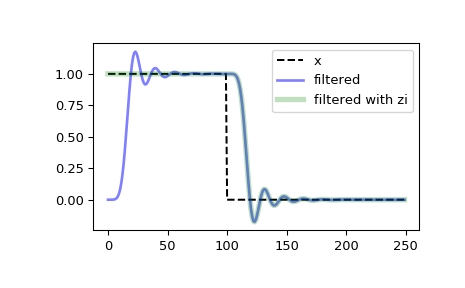

scipy.signal.sosfilt_zi¶
-
scipy.signal.sosfilt_zi(sos)[source]¶ Construct initial conditions for sosfilt for step response steady-state.
Compute an initial state zi for the
sosfiltfunction that corresponds to the steady state of the step response.A typical use of this function is to set the initial state so that the output of the filter starts at the same value as the first element of the signal to be filtered.
- Parameters
- sosarray_like
Array of second-order filter coefficients, must have shape
(n_sections, 6). Seesosfiltfor the SOS filter format specification.
- Returns
- zindarray
Initial conditions suitable for use with
sosfilt, shape(n_sections, 2).
Notes
New in version 0.16.0.
Examples
Filter a rectangular pulse that begins at time 0, with and without the use of the zi argument of
scipy.signal.sosfilt.>>> from scipy import signal >>> import matplotlib.pyplot as plt
>>> sos = signal.butter(9, 0.125, output='sos') >>> zi = signal.sosfilt_zi(sos) >>> x = (np.arange(250) < 100).astype(int) >>> f1 = signal.sosfilt(sos, x) >>> f2, zo = signal.sosfilt(sos, x, zi=zi)
>>> plt.plot(x, 'k--', label='x') >>> plt.plot(f1, 'b', alpha=0.5, linewidth=2, label='filtered') >>> plt.plot(f2, 'g', alpha=0.25, linewidth=4, label='filtered with zi') >>> plt.legend(loc='best') >>> plt.show()
